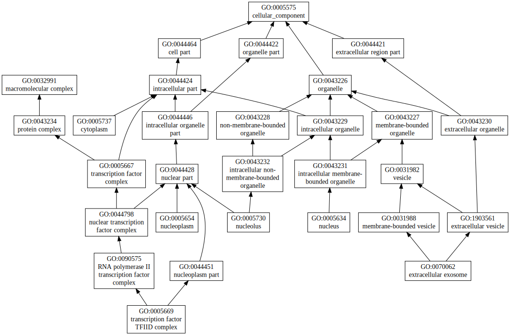

|
|
| GO term | CscoreGO | Name |
| GO:0003713 | 0.29 | transcription coactivator activity |
| GO:0030674 | 0.02 | protein binding, bridging |
| GO:0016799 | 0.02 | hydrolase activity, hydrolyzing N-glycosyl compounds |
| GO:0044822 | 0.01 | poly(A) RNA binding |
| GO:0008168 | 0.01 | methyltransferase activity |
| GO:0004402 | 0.01 | histone acetyltransferase activity |
| GO:0003700 | 0.01 | transcription factor activity, sequence-specific DNA binding |
| Download full result of the above consensus prediction. |
| Click the graph to show a high resolution version. |
| (a) | CscoreGO is the confidence score of predicted GO terms. CscoreGO values range in between [0-1]; where a higher value indicates a better confidence in predicting the function using the template. |
| (b) | The graph shows the predicted terms within the Gene Ontology hierachy for Molecular Function. Confidently predicted terms are color coded by CscoreGO: |
| | [0.13,0.5) | [0.5,0.6) | [0.6,0.7) | [0.7,0.8) | [0.8,0.9) | [0.9,1.0] |
|
|
|
|
| GO term | CscoreGO | Name |
| GO:0065007 | 0.08 | biological regulation |
| GO:0006355 | 0.07 | regulation of transcription, DNA-templated |
| GO:0045893 | 0.06 | positive regulation of transcription, DNA-templated |
| GO:0009987 | 0.05 | cellular process |
| GO:0071941 | 0.02 | nitrogen cycle metabolic process |
| GO:0048813 | 0.02 | dendrite morphogenesis |
| GO:0045944 | 0.02 | positive regulation of transcription from RNA polymerase II promoter |
| GO:0007424 | 0.02 | open tracheal system development |
| GO:0007417 | 0.02 | central nervous system development |
| GO:0006464 | 0.02 | cellular protein modification process |
| Download full result of the above consensus prediction. |
| Click the graph to show a high resolution version. |
| (a) | CscoreGO is the confidence score of predicted GO terms. CscoreGO values range in between [0-1]; where a higher value indicates a better confidence in predicting the function using the template. |
| (b) | The graph shows the predicted terms within the Gene Ontology hierachy for Biological Process. Confidently predicted terms are color coded by CscoreGO: |
| | [0.08,0.5) | [0.5,0.6) | [0.6,0.7) | [0.7,0.8) | [0.8,0.9) | [0.9,1.0] |
|
|
|

|
| Download full result of the above consensus prediction. |
| Click the graph to show a high resolution version. |
| (a) | CscoreGO is the confidence score of predicted GO terms. CscoreGO values range in between [0-1]; where a higher value indicates a better confidence in predicting the function using the template. |
| (b) | The graph shows the predicted terms within the Gene Ontology hierachy for Cellular Component. Confidently predicted terms are color coded by CscoreGO: |
| | [0.14,0.5) | [0.5,0.6) | [0.6,0.7) | [0.7,0.8) | [0.8,0.9) | [0.9,1.0] |
|
|
|